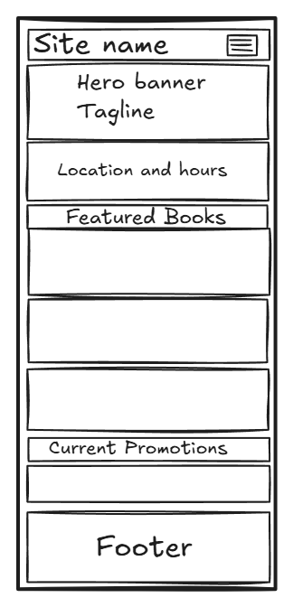
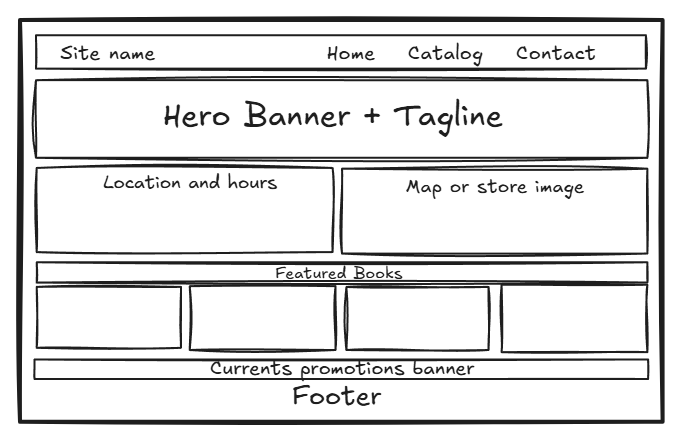

1. Site Name
The Page & Ink Bookstore
The name pairs "Page," representing the printed book itself, with "Ink," a nod to the craft of writing and printing behind every title. Together they evoke both the physical reading experience and the store's identity as a place where stories are made and shared, fitting for a shop that bridges a real storefront with an online catalog.
2. Site Purpose
The site connects a physical neighborhood bookstore with an online shopping experience. It gives visitors the store's location, hours, and current promotions, lets them browse and filter a live book catalog with detailed pricing and descriptions, and provides a way to pre-order titles, request a book for in-store pickup, or subscribe to the monthly book club newsletter.
3. Scenarios
- What are the store's hours today, and where exactly is it located?
- Is a specific book in stock, and can I filter the catalog by genre to find something similar?
- Can I reserve a book online and pick it up in person instead of waiting for shipping?
4. Color Scheme
A vintage, classic-bookstore palette: warm parchment backgrounds, leather-brown structure, and a wine-red accent for calls to action, with a touch of antique gold for small details.
- #F5EFE3 — primary background (parchment)
- #EDE3D0 — alternate section background
- #2E2118 — body text
- #6B4226 — header, nav, footer background
- #8B5E3C — borders and secondary details
- #A6320B — call-to-action buttons and links
- #B8860B — decorative accents, dividers, icons
5. Typography
Two Google Fonts are used across the site:
Playfair Display — used for all headings (h1–h3)
Lora — used for body text, paragraphs, and navigation links
6. Wireframe
Home page layout for small (mobile, 320px) and large (desktop) viewports.

Mobile (320px)

Desktop